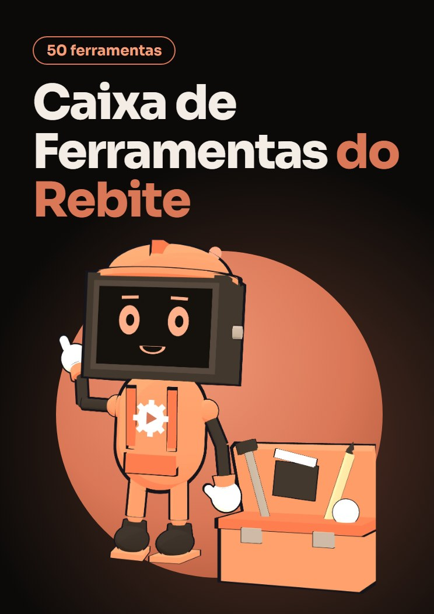

Novo · R$ 19,90 · vendas abrindo em breve
Caixa de Ferramentas do Rebite
50 ferramentas para cortar silêncios, colocar legenda, limpar o áudio, gravar a tela e conferir a capa. Abrem no navegador, sem instalar programa e sem mensalidade.